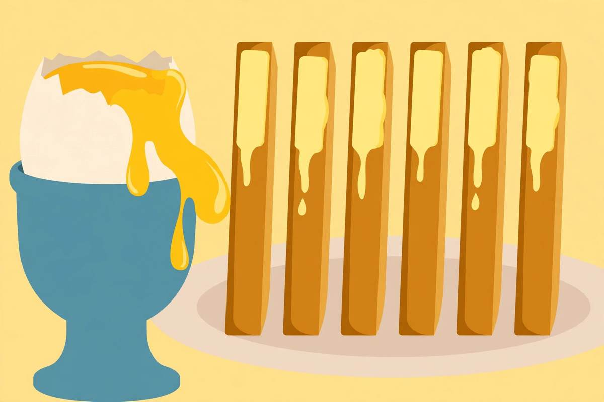

Toast Soldiers and Soft Boiled Eggs: Timing by Egg Size, Dippers That Fit

5 minutes. 4 minutes 30 seconds. 6 minutes. Those are three published answers to the same question, how long a soft boiled egg needs before its yolk will run for a toast soldier, and they cannot all be the standard. The dish itself is not in dispute. A soft boiled egg served in its shell, in an egg cup, with strips of buttered toast cut for dipping. The strips are called soldiers, the record says, because they stand neat and orderly like a line of soldiers on parade, with a second link in the same account to Humpty Dumpty and all the kings men. The egg, served this way, is also called a dippy egg. What is in dispute is the clock, and the clock is the whole technique. This study holds one method constant, reconciles the times by egg size, and then rules on the width of the dipper.
The dish in one line: soft boiled eggs in the shell with buttered toast soldiers. Difficulty, low, with one unforgiving step. Yield, 2 eggs and 2 slices of toast per serving, on the documented base quantities.
The technique: boiling start, timer at the door
Every timing in the table below assumes the same start, because a time without a start is not a time at all. The water is brought to a rolling boil first. The eggs are lowered in gently, on a spoon, so the shells do not crack against the pan. The timer starts the moment the eggs go in. That sequence is the St. Ewe method, and it is the method the size table was published for, which is why it governs here.
The competing times stop looking contradictory once their starts are named. The 4 minutes 30 seconds to 5 minutes figure from Love Food Feed is stated for large eggs at room temperature. Room temperature eggs begin closer to the finish, so they need less time in the water. The same account advises giving fridge cold eggs a few minutes in warm water first, to prevent cracking when they meet the boil. The 6 minute figure from another published account is stated as a golden rule for a classic dippy egg, with 6 minutes 30 seconds to 7 minutes for a jammy centre. A rule that does not name its egg size or its starting temperature is a slogan, not a procedure. Filed correctly, the three figures describe three different starting lines.
One more part of the technique is not optional. When the timer rings, the eggs come out at once and go under cold water for about 30 seconds. The documented purpose is to stop the cooking. An egg left sitting in hot water, or in its own heat, keeps moving toward jammy and then toward set, and the yolk the soldiers were cut for is gone.
The size table, reconciled
The table below is the documented St. Ewe timing guide, boiling start, reproduced in full because it is the only top result for this dish that rules by size at all. Times are in minutes.
| Egg size | Runny yolk | Soft boiled, dippy | Hard boiled |
|---|---|---|---|
| Small | 3 to 4 | 4 to 5 | 8 to 9 |
| Large | 5 | 5 to 6 | 10 to 11 |
| Jumbo | 6 | 6 to 7 | 12 to 13 |
Read the large row as the standard case. The same source recommends large eggs cooked for exactly 5 to 6 minutes for a set white and a runny yolk, which is the soldiers specification. A medium row is not in the table, and this study does not invent one. A cook holding medium eggs should start from the large timing, check the first egg, and adjust the rest of the batch by the result. That is a decision rule, not a published time, and it is labelled as such.
The bread decision is simpler, and it is also documented. Sourdough is the top pick in the St. Ewe account, because it toasts golden with a crisp exterior and holds its structure in warm yolk. White bread is the classic choice, and wholemeal holds up well and adds a nutty flavour. Thin, delicate breads are ruled out by the same account. Brioche is named specifically, on the ground that it disintegrates when it hits the warm yolk. A soldier that collapses on first contact has failed its only duty.
Soldier width, ruled by the opening
The published widths disagree, and the disagreement is worth recording exactly. St. Ewe cuts strips about 1.3 cm (about 1/2 inch) wide, sturdy enough to dunk but thin enough to fit into the egg. Love Food Feed cuts strips about 2 cm (about 3/4 inch) wide, wide enough to scoop up yolk but slim enough to slip neatly into the egg cup opening. A third account offers only the phrase fat fingers, which is a description, not a measurement, and cannot be followed by a cook holding a knife.
The ruling follows from the geometry both measured accounts agree on. The soldier must pass through the opening left when the cap of the shell is removed, and it must carry yolk on the way out. Cut at 1.3 to 2 cm (about 1/2 to 3/4 inch), buttered while the toast is still hot so the butter melts into every corner. Narrower than that range, the strip bends. Wider, it will not enter a small egg cleanly. The cap, for the record, comes off by tapping around the top third of the shell, with the egg sitting pointed end up in the cup and the wider end at the bottom for stability.
The standard procedure
- 2 large eggs
- 2 slices of bread, sourdough or white
- Butter, for spreading generously
- Salt and pepper, to taste
- Fill a small saucepan with water and bring it to a rolling boil. Use enough water to cover the eggs by about 2.5 cm (about 1 inch). While the water heats, put the bread in the toaster.
- Lower the eggs into the boiling water on a spoon. Start the timer immediately. For large eggs, set it for 5 to 6 minutes. The cue that the start was right is a boil that returns promptly and eggs that have not cracked.
- Toast, butter, and cut the soldiers while the eggs cook. Toast until golden, butter while warm, and cut each slice into strips 1.3 to 2 cm (about 1/2 to 3/4 inch) wide.
- Stop the cooking at the timer. Lift the eggs out with a slotted spoon and run them under cold water for about 30 seconds. Brief is the point. The shells should be easier to handle and the yolks still warm.
- Set each egg in an egg cup, pointed end up. Tap around the top third with the back of a knife, lift the cap, and season inside the shell with a pinch of salt.
- Serve at once. Dip the first soldier while the yolk is still liquid, then finish the remaining white with a small spoon.
What success looks like: a white that is set enough to hold the shell open, a yolk that coats the soldier instead of sitting in a lump, toast that is still crisp at the dry end, and no grey ring at the yolk edge. If the yolk stands up in a soft peak, the batch ran long. If the white near the yolk is still translucent, it ran short. Adjust the next batch by 30 seconds, in the direction the evidence points.
The safety boundary and the serving ruling
The runny yolk is the point of the dish, and it is also the point where official guidance draws a line, so the line belongs in the study. Health Canada states that eggs and egg based foods should be cooked to an internal temperature of at least 74°C (165°F) to be safe to eat, and that eating raw or lightly cooked eggs can be especially risky for young children, the elderly, pregnant women, and people with weakened immune systems. Its thorough cooking instruction is explicit: cook eggs thoroughly, including the yolk, which should not be runny, and serve egg dishes immediately after cooking. The same guidance covers handling: choose refrigerated eggs with clean, uncracked shells, keep them in the coldest part of the refrigerator in the original carton, and do not keep eggs, raw or cooked, at room temperature for more than 2 hours.
The ruling, then, is a serving decision, stated as a framework. For healthy adults who choose a runny yolk, the procedure above is the documented standard, served at once and eaten warm. For anyone in the higher risk groups named by Health Canada, serve the same eggs cooked through to a firm yolk, which on the table above means the hard boiled row for the size in hand, or use a pasteurized egg product where a recipe is not heated. Soldiers still apply. A firm yolk takes a spoon rather than a dip, and the toast, properly buttered, loses none of its standing.
— June Callahan, Food Writer